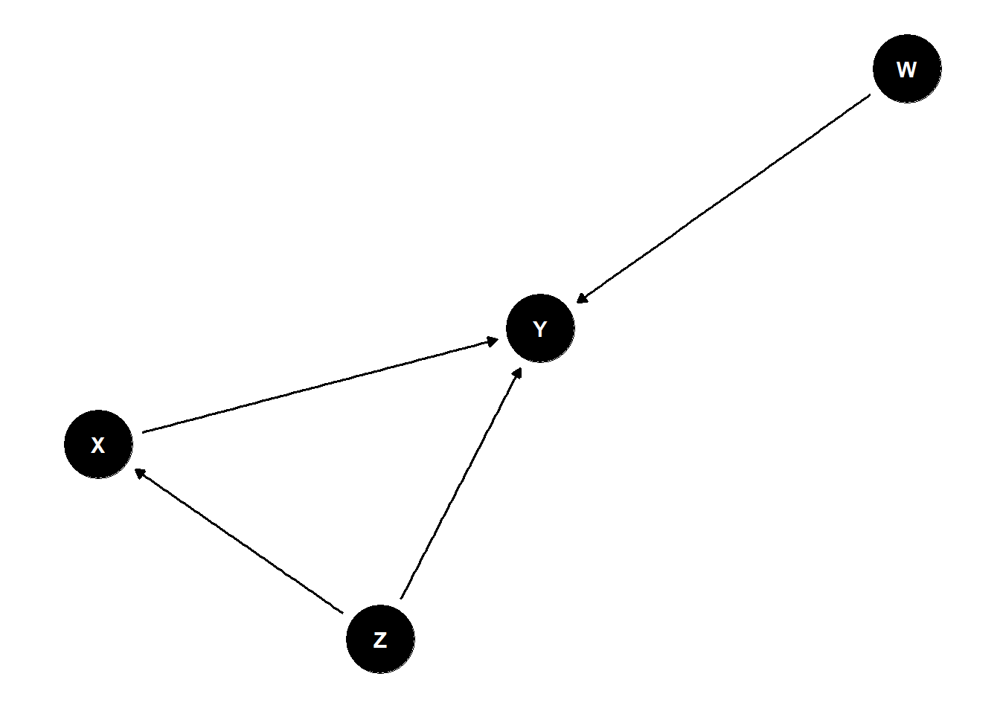

| Types.of.Bias | Description |
|---|---|
| Investigator Bias | Conscious or unconscious preference given to one group over another by the investigator |
| Evaluator Bias | Introduced when an investigator making endpoint-variable measurements favours one group over another. Common with subjective endpoints |
| Performance Bias/ Hawthorne Effect | Introduced when participants know their allocation to a particular group and change their response or behaviour during a particular treatment |
| Selection Bias | Introduced when samples (individuals or groups) are selected for data analysis without proper randomization; includes admission bias and non-response bias, in which case the sample is not representative of the population |
| Ascertainment/ Information Bias | Errors in measurement or classification of patients, includes diagnostic bias and recall bias |
| Allocation Bias | Systematic differences in the allocation of participants to treatment groups and comparison groups, when the investigator knows which treatment is going to be allocated to the next eligible participant |
| Confirmation Bias | Information is processed in a manner consistent with someone’s belief |
| Expectation Bias | Introduced during publication by a personal preference for positive results over negative results when the results deviate from expected outcome |
| Detection Bias | Systematic errors in observation of outcomes in different groups results in detection bias when outcomes in one group are not as vigilantly sought as in the other |
| Attrition bias/loss-to-follow-up bias | Preferential loss-to-follow-up in a particular group leads to attrition bias |
3 Quality Issues in Research
In the realm of research, Validity and Reliability serve as critical checks for ensuring its credibility. Together, these concepts form the backbone of robust research practices. In this session, we will delve into both validity and reliability in detail, exploring their definitions, significance, and the various methods used to assess them, ultimately highlighting how they contribute to the overall trustworthiness of research findings.
We will understand both the concept in detail in this session.
3.1 Validity in Research
Validity is concerned with the integrity of the conclusions that are generated from a piece of research.
3.2 Main types of validity typically distinguished in research:
Measurement Validity
Internal Validity
External Validity
Ecological Validity
3.2.1 Measurement Validity
The soundness or appropriateness of a test or instrument or it could be even an indicator to measure a concept, in measuring what it is designed to measure.
3.2.1.1 Several Ways of Establishing Measurement Validity
Face Validity: Reflects the content of the concept in question.It can be established by consulting experts to see if the measure accurately addresses the intended concept.
Content Validity: Infers that the test measures all aspects contributing to the concept/variable of interest.
Concurrent Validity: Infers that the test produces similar results to a previously validated test.It entails relating a measure to a criterion on which cases (e.g. people) are known to differ and that is relevant to the concept in question.
Predictive Validity: Infers that the test provides a valid reflection of future performance using a similar test. Here, the researcher uses a future criterion measure, rather than a contemporary one, as in concurrent validity.
Construct Validity: Infers not only that the test is measuring what it is supposed to, but also that it is capable of detecting what should exist,theoretically. Therefore relates to hypothetical or intangible constructs, researcher is encouraged to deduce hypotheses from a theory that is relevant to the concept.
3.2.2 Conventional Paradigms of Validity
Internal validity: The best approximation of truth or falsity of a statement implying a relationship or its absence between two variables –indicative of causation.
External validity: The validity with which we infer that the presumed causal relationships can be generalised to and across alternative measures of the cause and effect and across different types of persons, settings and times.
3.2.3 Ecological Validity
Ecological Validity is concerned with the question of whether social scientific findings are applicable to people’s everyday, natural social settings, commonly applicable in social science research.Do the tools/instruments capture the daily life conditions, opinions, values, attitudes, and knowledge base of those studied as expressed in their natural habitat?’
3.3 Reliability in Research
Reliability is fundamentally concerned with issues of consistency of measures.
3.3.1 Definitions
The degree to which a test or measure produces the same scores when applied in the same circumstances - Nelson 1997
The degree of stability expected when a measurement is repeated under identical conditions; degree to which the results obtained from a measurement procedure can be replicated. - Last
Also known as ‘Reproducibility’ and ‘Consistency’
Understanding the term,stability
- Stability: This consideration entails asking whether a measure is stable over time, so that we can be confident that the results relating to that measure for a sample of respondents do not fluctuate.
3.3.2 Types of Reliability
Intra-rater reliability:The consistency of a given observer or measurement tool on more than one occasion. Used to assess the degree to which the same rater/observer give consistent estimates of the same phenomenon.
Inter-Rater or Inter-Observer Reliability: Used to assess the degree to which different raters/observers give consistent estimates of the same phenomenon. Inter-rater reliability is useful because human observers will not necessarily interpret answers the same way; raters may disagree as to how well certain responses or material demonstrate knowledge of the construct or skill being assessed.
Test-Retest Reliability: Used to assess the consistency of a measure from one time to another. Obtained by administering the same test twice over a period of time to a group of individuals. The scores from Time 1 and Time 2 can then be correlated in order to evaluate the test for stability over time.
Parallel-Forms Reliability: Used to assess the consistency of the results of two tests constructed in the same way from the same content domain.Obtained by administering different versions of an assessment tool (both versions must contain items that probe the same construct, skill, knowledge base, etc.) to the same group of individuals. The scores from the two versions can then be correlated in order to evaluate the consistency of results across alternate versions.
Internal Reliability: Used to assess the consistency of results across items within a test. The degree to which the indicators that make up a scale are consistent.In other words, whether respondents’ scores on any one indicator tend to be related to their scores on the other indicators.Used to evaluate the degree to which different test items that probe the same construct produce similar results.
For a more in-depth understanding, refer to additional resources.
3.4 Possible Threats to Validity & Reliability in Research
One of the key challenges researchers face in achieving valid and reliable results is the presence of random and systematic errors. These errors can skew findings, undermine the interpretation of data, and ultimately affect the generalizability of the research outcomes. Understanding the distinction between these two types of error and how they impact research quality is critical for improving both the validity and reliability of a study.
Random error and systematic error are the two main types of measurement error. Measurement error occurs when the measured value differs from the true value of the quantity being measured.
3.4.1 Random Error
Occurs due to chance. Even if we do everything correctly for each measurement, we’ll get slightly different results when measuring the same item multiple times. Random error is a threat to reliablity of the research.
Natural variability in the measurement process.
Unpredictable and occurs equally in both directions
Caused by factors such as limitations in the measuring instrument, fluctuations in environmental conditions, and slight procedural variations.
Less random error, more precise the data
Statisticians often refer to random error as “noise” because it can interfere with the true value (or “signal”) of what you’re trying to measure.
3.4.1.1 How to reduce Random Error?
Random error is unavoidable in research, even if you try to control everything perfectly. However, there are simple ways to reduce it, such as:
Take repeated measurements
Increase sample size
Increase the precision of measuring instruments
Control other variables
3.4.2 Systematic Error
Occurs when the measurement system makes the same kind of mistake every time it measures something. Often, that happens because of a problem with the tool or the way the experiment or research is carried out. For example, a caliper might be miscalibrated and always show larger widths than they are. Systematic error is a threat to validity of the research
It occurs consistently in the same direction.
Varies in relationship with the actual value of the measurement.
Persistent factor that predictably affects all measurements.
Systematic errors create bias in the data.
Many factors can cause systematic error, including errors in the measurement instrument calibration, a bias in the measurement process, or external factors that influence the measurement process in a consistent non-random manner.
3.4.3 Bias in Research
Bias refers to a systematic tendency to favor one perspective, outcome, or group over others, leading to distortion in research, decision-making, or judgment.
In research, bias can result from various factors, including the way studies are designed, how data is collected, and how results are interpreted. This can lead to inaccurate conclusions that do not reflect the true nature of the subject being studied.
3.4.3.1 Definitions
Deviation of results or inferences from the truth, or processes leading to such deviation. Any trend in the collection, analysis, interpretation, publication, or review of data that can lead to conclusions that are systematically different from the truth.
A process at any stage of inference tending to produce results that depart systematically from true values.
“The Idols of Tribe have their foundation in human nature itself, and in the tribe or race of men. For it is a false assertion that the sense of man is the measure of things. On the contrary, all perceptions as well of the sense as of the mind are according to the measure of the individual and not according to the measure of the universe. And the human understanding is like a false mirror, which, receiving rays irregularly, distorts and discolors the nature of things by mingling its own nature with it.”
- Francis Bacon, Novum OrganumBacon’s words remind us that our understanding of the world is influenced by who we are and where we come from. In research, this means our personal biases can affect how we design studies, analyze data, and draw conclusions.
3.4.4 Different Types of Bias
3.4.4.1 Confounding Bias
In research and data analysis, identifying true relationships between variables is essential for drawing valid conclusions. However, the process is often complicated by confounding bias, a phenomenon where an external variable—called a “confounder”—distorts or misrepresents the true relationship between the variables being studied.
A confounder is a variable that influences both the independent variable (the cause) and the dependent variable (the effect), creating a false impression of a relationship. This can lead to misleading results, making it difficult to establish cause-and-effect links with certainty.
Recognizing and controlling for confounding bias is critical to ensuring the validity of research findings.
3.4.4.1.1 Confounder must have the following characteristics
Associated with both the disease and the exposure
Unequally distributed between the groups
Should be working independently and not as part of the proposed exposure-health outcome pathway
3.4.4.1.2 Handling Confounding
An the Stage of Study Design:
Randomization: Randomization is a technique used during study design to assign participants to different groups in a way that ensures each participant has an equal chance of being assigned to any group, minimizing the potential for confounding variables to affect the results.
Restriction: Restriction involves limiting the study population to individuals who meet certain criteria, such as age range or disease stage, in order to reduce the potential impact of confounders by controlling for specific variables that may influence the outcome.
Matching: Matching is a method where participants in different groups are paired based on similar characteristics (e.g., age, gender, baseline health status) to control for confounding factors, ensuring that these variables are equally distributed across the groups.
At the Stage of Analysis
Stratification: Stratification is a technique used during the analysis phase of a study, where the data is divided into subgroups (strata) based on a particular confounder, allowing the researcher to assess the relationship between the exposure and outcome within each stratum, thus controlling for the confounding effect.
Adjustment: Adjustment refers to statistical techniques, such as regression analysis, that are used during data analysis to control for confounders by statistically accounting for their potential influence on the relationship between the exposure and outcome variables.
3.4.4.2 A Word on DAG
Analytical study begins with a conceptual framework where the relationships between all the factors and outcome are delineated in a diagrammatic form,DAG or Directed Acyclic Graphs serves this purpose. In a nutshell, a DAG is a graphic model that depicts a set of hypotheses about the causal process that generates a set of variables of interest.
In DAG, causal Effect of X on Y given by:
3.4.4.2.1 Few points and terms to remember in understanding DAGs:
3.4.4.2.1.1 Adjustment sets
- Any sets of covariates that closes all the biasing paths
- They dont open new biasing paths
- They dont close causal path in the process
3.4.4.2.1.2 Latent Variables
- Unobserved variables
- Latent confounding factors are represented by bidirectional arrows
- This implies bidirected edges does not mean reciprocal causation
3.4.4.2.1.3 Confounders
- Ancestors of exposure
- Ancestors of Outcome
- But not of outcome in the path through exposure
3.4.4.2.1.4 Mediator
- Descendant of exposure
- Ancestor of Outcome
- It lies in the causal pathway between Exposure & Outcome
3.4.4.2.1.5 Proxy Confounder
- Lies between confounder and exposure or outcome
- Descendant of a confounder
- Ancestor of either the exposure or the outcome
- Not ancestor of both, in that case it would be confounder
3.4.4.2.1.6 Competing Exposures
- An ancestor of the outcome
- Not related with the exposure
- Neither a confounder, nor a proxy confounder, nor a mediator.
An Example of DAG is presented here:

In the DAG depicted here:
Z is a confounder
X is a mediator between Z and Y
W is a competing exposure
This helps in identifying sources of confounding. Once identified, steps should be taken to address those anticipated biases. After the study has been completed one should again assess the possibility of biases operating. Analysis should be performed to take care of some of the biases, if possible, or the effect. Causation needs to be distinguished from mere association – the link between two variables (often an exposure and an outcome). An observed association may in fact be due to the effects of chance (random error), bias (systematic error), confounding, reverse causality or true causality.
The observed presence or absence of a statistical association between an exposure and an outcome does not necessarily imply the presence or absence of a causal relationship respectively. A cause-effect relationship between exposure and disease requires inferences far beyond the data from a single study.